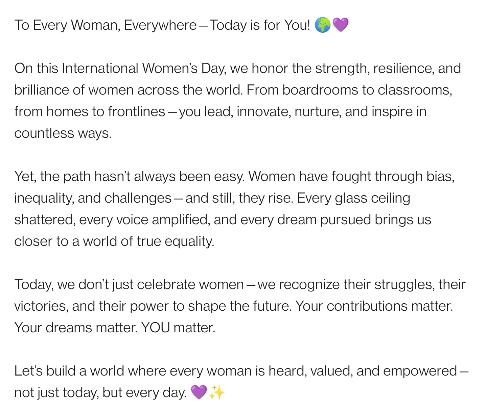
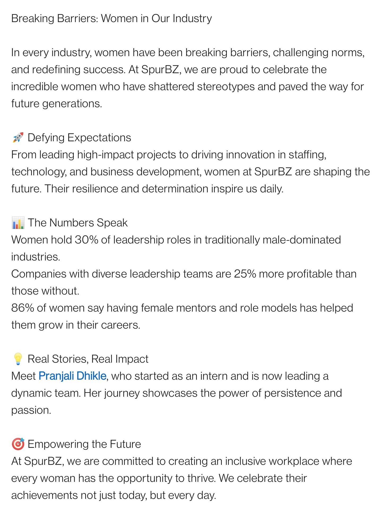

Selected Campaign Visuals



A structured 7-day LinkedIn content series designed to celebrate professional women while building brand narrative continuity.
To celebrate International Women’s Day, I conceptualized and designed a 7-day LinkedIn campaign focused on storytelling, employee recognition, leadership highlights, and empowerment-driven messaging.
Instead of creating a single celebratory post, the campaign was structured as a narrative sequence — building momentum and engagement throughout the week.
This campaign demonstrates structured content planning, platform-specific visual design, and brand-aligned storytelling.
Each post maintained visual consistency while adapting to its narrative focus — balancing corporate professionalism with human-centered storytelling.
The objective was not just celebration, but positioning the brand as inclusive, people-focused, and aligned with LinkedIn’s professional tone.